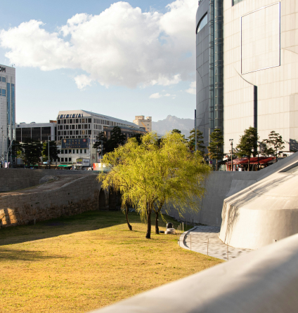
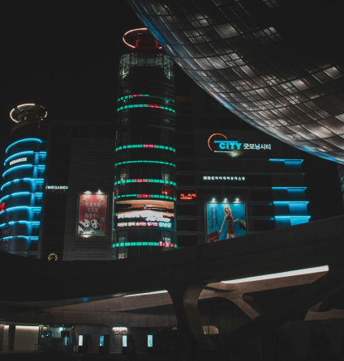
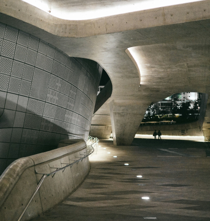
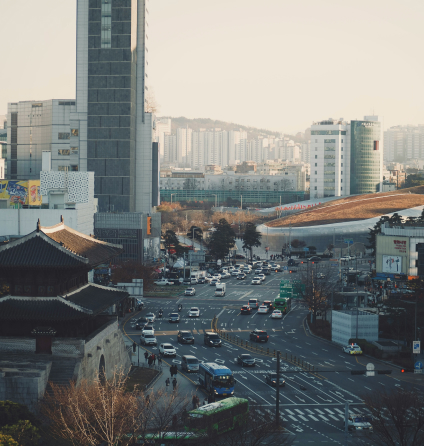

회사소개
KUMHO E&C
금호건설은 아름다운 미래를 건설합니다
금호건설은 아름다운 미래를 건설합니다
연혁
현재 ~ 2011년
세계 속의 한국, 한국 속의 세계를 건설

2024 ~ 2021
- 2024. 06 조경특화 브랜드 '아트시스' 출시
- 2024. 05 금호건설 주거 브랜드 아테라 런칭
- 2023. 12 조완석 사장 체제로 조직 개편
- 2023. 09 임직원 기부활동 "DOVE's (Do Love, Sustainable)" 전개
- 2021. 03 금호건설(주)로 상호변경
2020 ~ 2013
- 2018. 10 건설업계 최초 자회사형 장애인 표준사업장 설립 협약 체결
- 2016. 07 서재환 사장 체제로 조직 개편
- 2014. 07 충북 증평군 사곡리마을과 1社1村 자매결연
- 2013. 01 원일우 사장 체제로 조직 개편
2012 ~ 2011
- 2012.03 다기능 스마트 스위치, 레드닷 디자인 어워드 수상
- 2011. 10 베트남 21개 현지 협력사와 ‘우수 협력사 Partnership 강화’
- 2011. 04 UAE 아부다비 공항 관제탑 그랜드 오픈(Grand Open)
- 2011. 04 경기도 화성시 신천마을과 1社1村 자매결연식
2010년 ~ 2009년
지속적인 성장을 통해 신뢰받는 브랜드로 자리매김해왔습니다.

2010 ~ 2009
- 2010. 11 도심 최대규모 오피스빌딩 센터원(CENTER1) 준공
- 2010. 10 UAE 아부다비 공합 관제탑 준공
- 2009. 09 베트남 금호아시아나플라자 준공
- 2009. 08 빛그린어울림마을 1호 조성(홍제동 개미마을)
- 2009. 06 상반기 공공부문 수주실적 1조원 돌파, 업계 최다 실적
2008 ~ 2005
- 2008. 10 여수시 신재생에너지 사업 참여 MOU 체결
- 2008. 07 건설업계 최저 재해율 1위 달성
- 2008. 06 2008년 상반기 건설업계 최다 GD마크 획득
- 2008. 06 베트남 사랑의 집 9호
2004 ~ 2001
- 2012. 03 다기능 스마트 스위치, 레드닷 디자인 어워드 수상
- 2011. 10 베트남 21개 현지 협력사와 ‘우수 협력사 Partnership 강화’ MOU 체결
- 2011. 04 UAE 아부다비 공항 관제탑 그랜드 오픈(Grand Open)
- 2011. 04 경기도 화성시 신천마을과 1社1村 자매결연식
2000년 ~ 1998년
혁신과 한계 없는 도전으로 새로운 역사를 열어갑니다.

2000 ~ 1998
- 1999. 07 플랜트사업 본격화, T-5 비축생산기지 완공으로 대통령 표창 수상
- 1999. 07 T-5 비축생산기지 완공으로 대통령 표창 수상
- 1999. 03 금호베스티빌 브랜드 도입 _ 용인 수지 금호베스트빌 1ㆍ2차
- 1999. 02 금호산업(주)로 상호변경
- 1998. 11 금호타운 브랜드 도입 _ 여수 여서동 금호아파트 첫 적용
1997 ~ 1996
- 1997. 지식경영 캠페인 '1:10:100' 운동 전개
- 1996. 12 ‘96안전환경상 우수상 수상’
- 1996. 04 제 22회 전국품질경영대회 품질경영상 대통령상 수상
- 1996. 02 국내 1호 SOC 민자사업 "인천국제공항고속도로" 첫 삽
1995 ~ 1991
- 1995. 11 전국품질경영대회 제안 기업부문 대통령상 수상
- 1995. 10 하수고도처리 기술 KIDEA공법 KIST와 공동 추진
- 1995. 08 ISO14001 인증획득, BS7750 인증획득
- 1995. 06 호치민 지사 설립
- 1995. 02 주거공간 고유 브랜드 "금호베스트홈" 도입
- 1994. 04 국내 최초 PC부문 ISO 9001 인증획득
1990년 ~ 1960년
세계 속의 한국, 한국 속의 세계를 건설

1980
- 2010. 11 건설기술연구소 설립
- 1984. 10 (주)광주고속으로 상호변경
1970
- 1979. 12 요르단 퀸 알리아 공사 수주
- 1979. 10 요르단 암만지사 설립
- 1979. 01 필리핀 치코강 댐 건설공사 수주
- 1978. 11 필리핀 마닐라지사 설립
- 1979. 04 사우디아라비아 리야드지사 설립
1960
- 1967. 02 제일토목건축 주식회사 설립